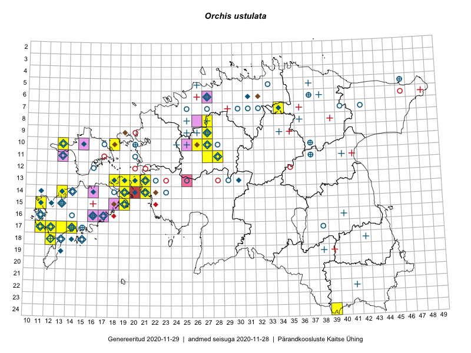

Orchis ustulata
Uuendatud: 2016-12-07
Kaardile koondatud taksonid: Orchis ustulata L.

Kaart põhineb 23 vaatlusel. Taime on leitud 12 ruudust.
| Ruut | Vaatleja(d) | Vaatlusaeg | Kirje tüüp | Viide andmebaasikirjele |
|---|---|---|---|---|
| 18-12 | Toomas Kukk, Thea Kull, Ott Luuk, Peedu Saar, Mari Reitalu | 2014-05-23 | punkt | vaata PlutoFis |
| 07-34 | Jana-Maria Habicht, Ester Valdvee | 2015-07-20 | ruut/ala | vaata PlutoFis |
| 07-34 | Jana-Maria Habicht, Ester Valdvee | 2015-07-20 | punkt | vaata PlutoFis |
| 07-34 | Jana-Maria Habicht, Ester Valdvee | 2015-07-20 | punkt | vaata PlutoFis |
| 13-21 | Rein Kalamees, Kersti Püssa | 2015-06-28 | ruut/ala | vaata PlutoFis |
| 14-21 | Ulvi Selgis | 2014-07-05 | punkt | vaata PlutoFis |
| 13-19 | Meeli Mesipuu, Kadri Tali | 2015-06-24 | ruut/ala | vaata PlutoFis |
| 10-26 | Aat Sarv | 2015-07-22 | ruut/ala | vaata PlutoFis |
| 13-20 | Kadri Tali | 2015-05-08 | ruut/ala | vaata PlutoFis |
| 13-19 | Kadri Tali | 2015-10-05 | ruut/ala | vaata PlutoFis |
| 13-21 | Ott Luuk, Maret Gerz | 2014-07-03 | ruut/ala | vaata PlutoFis |
| 11-28 | Aat Sarv | 2015-07-25 | ruut/ala | vaata PlutoFis |
| 09-27 | Aat Sarv | 2015-07-24 | ruut/ala | vaata PlutoFis |
| 08-27 | Aat Sarv | 2015-07-23 | ruut/ala | vaata PlutoFis |
| 10-27 | Aat Sarv | 2015-07-02 | ruut/ala | vaata PlutoFis |
| 11-28 | Aat Sarv | 2015-07-25 | punkt | vaata PlutoFis |
| 10-27 | Ulvi Selgis | 2016-07-23 | punkt | vaata PlutoFis |
| 14-21 | Mari Reitalu, Oliver Parrest | 2016-07-04 | ruut/ala | vaata PlutoFis |
| 14-21 | Mari Reitalu, Oliver Parrest | 2016-07-04 | punkt | vaata PlutoFis |
| 15-19 | Meeli Mesipuu, Virve Sõber | 2012-06-08 | punkt | vaata PlutoFis |
| 15-19 | Meeli Mesipuu, Virve Sõber | 2012-06-08 | punkt | vaata PlutoFis |
| 15-19 | Meeli Mesipuu, Virve Sõber | 2012-06-08 | punkt | vaata PlutoFis |
| 15-19 | Meeli Mesipuu, Virve Sõber | 2012-06-08 | punkt | vaata PlutoFis |